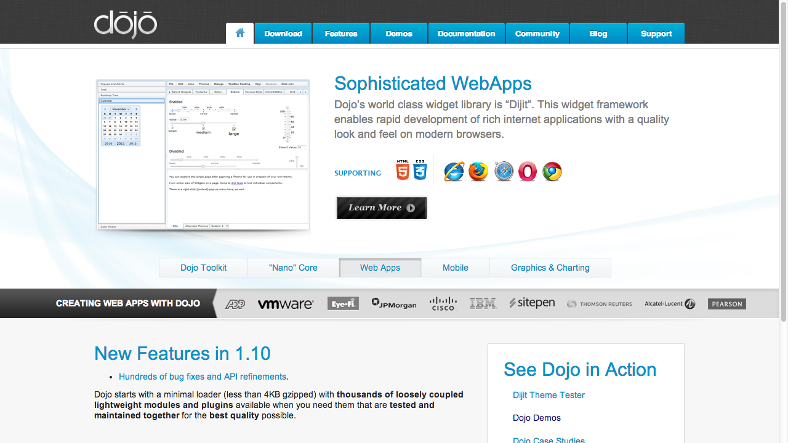
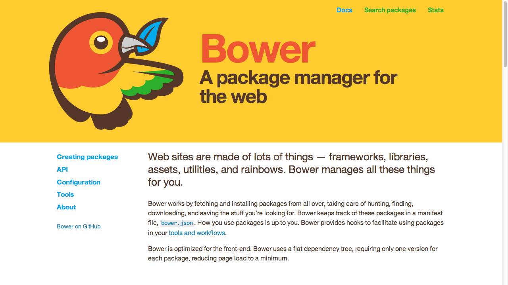
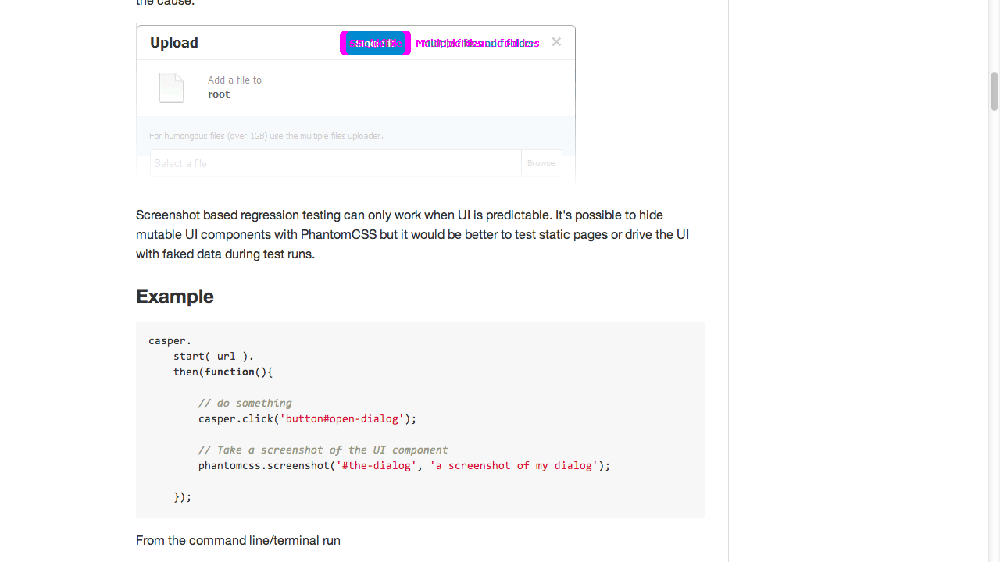

Modern JavaScript
Created by Scott Preston / @scottpreston
About Me
- Practice Lead AIS/ICC - JavaScript/Grails/Mobile
- Love JavaScript
- Robots & Smart Home Running in JS
Presentation
- Modern JS
- Pairing / Live Programming - Robot
First, notice something about this Slide Deck?
Reveal.JS
Pure JavaScript
Objects
Are there classes in JavaScript?
Object Examples
var a = {}; // easiest object ever
var b = new Object(); // js for java developers
function c() {}; // functions are objects too
Method (Literal Notation)
var a = {
foo: function() {
alert('hello');
},
bar: function(a){
alert(a);
}
};
Method (Function Notation)
var a = {}; // or new Object();
a.foo = function() {
alert('hello');
};
a.bar = function(a) {
alert(a);
}:
Scope
This is how you create instance variables.
var a = new function() {
this.count = 1;
this.bar = function() {
alert(this.count);
this.count++;
}
};
a.bar(); // execute
a.bar(); // execute
Scope Part 2
How do you reference this twice?
var a = new function() {
this.count = 1;
this.bar = function() {
var counter = function() {
this.counter = function() {
this.count++; // THIS WILL ERROR!!!
}
};
var counter = function() {
var that = this; // reference outer object 'a'
this.counter = function() {
that.count++; // THIS WILL WORK!
}
};
}
}
Literals vs. new()
- Literals - Singltons & Data
- new() - 'instances' & Multiple copies
Functions
First class and can be passed around like variables/objects.
Immediate Anonymous Functions
Have you heard of these?
Anonymous Function Example
They look like normal functions but...
function hello() {
alert('hi all!');
}(); // two added parens cause immediate execution
Note on Convention
(function hello() {
alert('hi all!');
})(); // two added parens cause immediate execution
Modules
var Module = (function () {
alert('hi all!');
})();
var Module = (function () {
var privateMethod1 = function() {};
var privateMethod2 = function() {};
return {
publicMethod: function() {
// ...
}
}
})();
Modules Everywhere
var Module = (function () {
alert('hi all!');
})();
// or jQuery Pattern?
(function () {
var m = function() {
alert('hi all!');
};
window.Module = m;
window.jQuery = window.$ = m;
})();
Frameworks
jQuery - $
$("#selector").click(function() {
// stuff
});
jQuery UI
jQuery Mobile
Twitter Boostrap
YUI
Dojo

How To Choose?
Libraries
More specialized than frameworks.
AMD / RequireJS
A.M.D. - Asynchronous Module Definition

How to load JavaScript in the 90's
RequireJS - 3 Steps
- Include The Library
- define()
- require()
Including The Library
Defining Modules
define(["./cart", "./inventory"], function(cart, inventory) {
//return an object to define the "my/shirt" module.
return {
color: "blue",
size: "large",
addToCart: function() {
inventory.decrement(this);
cart.add(this);
}
}
});
Requiring Modules
require(["one", "two", "three"], function (one, two, three) {
});
How Does This Work?
First let's define an array and a define()
var modules = [];
function define(name, callback) {
modules[name] = callback;
}
Define A Module
define("foo", function() {
var foo = {
a: 1,
b: 2,
add: function () {
return this.a + this.b;
}
};
return foo;
});
Create A Loader
function load(file, callback) {
var script = document.createElement('script');
script.type = 'text/javascript';
script.async = true;
script.src = file + ".js";
(document.getElementsByTagName('head')[0] || document.getElementsByTagName('body')[0]).appendChild(script);
script.onload = function() {
callback(modules[file]);
};
}
// callback is just executing a function (functions are variables)
modules[file] = function() {
var foo = {
a: 1,
b: 2,
add: function () {
return this.a + this.b;
}
};
return foo;
}
The Loader
load('foo', function (foo){
var f = new foo();
f.a = 100;
f.b = 200;
alert(f.add());
});
Handlebars
Sample Handlebars Template
Underscore or _
Utility Belt - Collections

D3
Data. Driven. Design.

Fabric JS
Working with Canvas

Canvas JS
More Working With Canvas

Jasmine
Mocha
QUnit
MV*
What's MV*?
MVC
Model. View. Controller.
MVVM
Model. View. ViewModel.
MV* in JS
Same as Server Pattern, but no DB. REST.
- Model - Holds Data. Makes Ajax Calls. CRUD.
- Service - Coordinates Calls To Models. Composite Models.
- Controllers - Calls Models/Services Passes Data to Views
- Views - HTML/Objects Binding Data, Handling Events.
AngularJS
Developed By Google. Very Popular.
BackboneJS
Tends to be opinionated. Uses Handlebars.
EmberJS
Yet another MVC framework that uses Handlebars.
Example Code - Setup
<html ng-app="phonecatApp">
<head>
</head>
<body> ng-controller="PhoneListCtrl">
-
{{phone.name}}
{{phone.snippet}}
</body>
</html>
The Controller
var phonecatApp = angular.module('phonecatApp', []);
phonecatApp.controller('PhoneListCtrl', function ($scope) {
$scope.phones = [
{'name': 'Nexus S',
'snippet': 'Fast just got faster with Nexus S.'},
{'name': 'Motorola XOOM with Wi-Fi',
'snippet': 'The Next, Next Generation tablet.'},
{'name': 'MOTOROLA XOOM',
'snippet': 'The Next, Next Generation tablet.'}
];
});
NodeJS
Server Side JS

Why Server Side JS?
- Robots
- Non-Blocking IO
- Tooling - Builds, Automating Test, Etc
NPM - Node Package Manager
npm install serialport -g // globally
npm install serialport --save-dev // locally
Robot Node - Setup
// Load the http module to create an http server.
var http = require('http');
var url = require('url');
var port = 8000;
var usbport = "/dev/ttyUSB0";
var SerialPort = require("serialport").SerialPort;
var sp = new SerialPort(usbport, {
baudrate: 9600
});
Robot Node - write()
function write(pin, pos) {
if (pin == "m") {
var posA = pos.split(",");
var b1 = [255, 0, posA[0]];
var b2 = [255, 1, posA[1]];
sp.write(b1);
sp.write(b2);
console.log("motion command writing (" + posA[0] + ", " + posA[1]);
}
if (pin >= 0 && pos >= 0) {
var b = [255, pin, pos];
sp.write(b);
console.log("serial port writing on pin=" + pin + ", position = " + pos);
}
}
Robot Node - web server
// Configure our HTTP server to respond with Hello World to all requests.
var server = http.createServer(function (request, response) {
var headers = {};
headers["Access-Control-Allow-Origin"] = "*";
headers["Access-Control-Allow-Methods"] = "POST, GET, PUT, DELETE, OPTIONS";
headers["Access-Control-Allow-Credentials"] = false;
headers["Access-Control-Max-Age"] = '86400'; // 24 hours
headers["Access-Control-Allow-Headers"] = "X-Requested-With, X-HTTP-Method-Override, Content-Type, Accept";
headers["Content-Type"] = "text/plain";
response.writeHead(200, headers);
var url_parts = url.parse(request.url, true);
var pin = url_parts.query.pin;
var pos = url_parts.query.pos;
write(pin, pos);
response.end("pin = " + pin + ", position = " + pos);
});
// Listen on port 8000, IP defaults to 127.0.0.1
server.listen(port);
console.log("Server running at http://127.0.0.1:" + port);
Build Systems
GruntJS

Sample Grunt FIle (91 Lines)
module.exports = function (grunt) {
// Project configuration.
grunt.initConfig({
pkg: grunt.file.readJSON('package.json'),
uglify: {
libs: {
options: {
sourceMap: true,
sourceMapName: '../dist/lib-bundle.min.map'
},
files: {
'../dist/lib-bundle.min.js': [ '../dist/lib-bundle.js' ]
}
},
app: {
options: {
sourceMap: true,
sourceMapName: '../dist/lunchosars.min.map'
},
files: {
'../dist/lunchosars.min.js': [ '../dist/lunchosars.js' ]
}
}
},
jshint: {
all: ['../lunchosars/*.js', '../lunchosars/controllers/*.js']
},
jasmine: {
src: ['../jquery/*.js', '../src/*.js'],
options: {
specs: '../../test/js/spec/*.js'
}
},
cssmin: {
combine: {
files: {
'../../css/lunchosars.min.css': [
'../../css/bootstrap.css',
'../../css/bootstrap-theme.css',
'../../themes/default/style.css']
}
}
},
concat: {
options: {
separator: ';'
},
libs: {
src: [
'../bower_components/angular/angular.js',
'../bower_components/angular-route/angular-route.js',
'../bower_components/jquery/dist/jquery.js',
'../bower_components/bootstrap/dist/bootstrap.js'
],
dest: '../dist/lib-bundle.js'
},
app: {
src: [
'../lunchosars/app.js',
'../lunchosars/controllers/*.js',
],
dest: '../dist/lunchosars.js'
}
},
watch: {
scripts: {
files: ['../lunchosars/*.js', '../lunchosars/controllers/*.js', '../../css/*.css', '../../themes/default/style.css'],
tasks: ['concat:app', 'uglify:app'],
options: {
spawn: false
}
}
}
});
// Load the plugin that provides the "uglify" task.
grunt.loadNpmTasks('grunt-contrib-uglify');
grunt.loadNpmTasks('grunt-contrib-jasmine');
grunt.loadNpmTasks('grunt-contrib-concat');
grunt.loadNpmTasks('grunt-contrib-cssmin');
grunt.loadNpmTasks('grunt-contrib-jshint');
grunt.loadNpmTasks('grunt-contrib-watch');
// Default task(s).
grunt.registerTask('default', ['cssmin', 'concat', 'uglify' ]);
};
GulpJS
Sample Gulp File (58 lines)
var gulp = require('gulp'),
sass = require('gulp-sass'),
rename = require('gulp-rename');
// Include Our Plugins
var jshint = require('gulp-jshint');
var concat = require('gulp-concat');
var uglify = require('gulp-uglify');
var rename = require('gulp-rename');
var scripts = ['../lunchosaurs/*.js', '../lunchosaurs/**/*.js'];
var scss = ['../../sass/*.scss'];
var libs = ['../bower_components/angular/angular.js',
'../bower_components/angular-route/angular-route.js',
'../bower_components/jquery/dist/jquery.js',
'../bower_components/bootstrap/dist/bootstrap.js'];
// Lint Task
gulp.task('lint', function () {
return gulp.src(scripts)
.pipe(jshint())
.pipe(jshint.reporter('default'));
});
gulp.task('styles', function () {
return gulp.src(scss)
.pipe(sass({ style: 'expanded' }))
.pipe(gulp.dest('../../css'));
});
// Concatenate & Minify JS - LIBRARIES
gulp.task('libs', function () {
return gulp.src(libs)
.pipe(concat('libs-all.js'))
.pipe(gulp.dest('../dist'))
.pipe(rename('libs-all.min.js'))
.pipe(uglify())
.pipe(gulp.dest('../dist'))
;
});
// Concatenate & Minify JS -- APP
gulp.task('appscripts', function () {
return gulp.src(scripts)
.pipe(concat('lunchosaurs.js'))
.pipe(gulp.dest('../dist'))
;
});
// Watch Files For Changes
gulp.task('watch', function () {
gulp.watch(scripts, ['lint', 'appscripts']);
gulp.watch(scss, ['styles']);
});
// Default Task
gulp.task('default', ['lint', 'libs', 'appscripts', 'styles', 'watch']);
Other Cool Stuff
Bower

Yeoman

PhantomJS

CasperJS
PhantomCSS
https://github.com/Huddle/PhantomCSS
